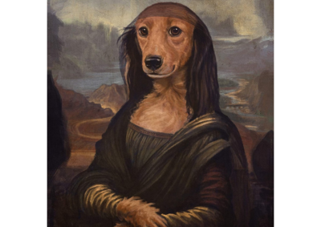
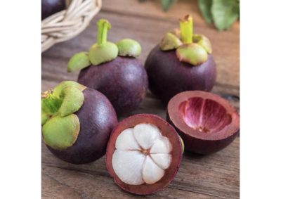

While Large Vision Language Models (LVLMs) demonstrate impressive capabilities, their substantial computational and memory requirements pose deployment challenges on resource-constrained edge devices. Current parameter reduction techniques primarily involve training LVLMs from small language models, but these methods offer limited flexibility and remain computationally intensive. We study a complementary route: compressing existing LVLMs by applying structured pruning to the language model backbone, followed by lightweight recovery training. Specifically, we investigate two structural pruning paradigms: layerwise and widthwise pruning, and pair them with supervised finetuning and knowledge distillation on logits and hidden states. Additionally, we assess the feasibility of conducting recovery training with only a small fraction of the available data. Our results show that widthwise pruning generally maintains better performance in low-resource scenarios, where computational resources are limited or there is insufficient finetuning data. As for the recovery training, finetuning only the multimodal projector is sufficient at small compression levels. Furthermore, a combination of supervised finetuning and hidden-state distillation yields optimal recovery across various pruning levels. Notably, effective recovery can be achieved using just 5% of the original data, while retaining over 95% of the original performance.
We study three representative LVLM families spanning 3B–7B parameters. Across all architectures, the LLM decoder accounts for over 85% of total parameters, making it the natural target for compression.
| LLaVA-v1.5-7B | Mini-InternVL-Chat-4B | Bunny-v1.0-3B | |
|---|---|---|---|
| Total Params | 7.0B | 4.1B | 3.2B |
| Vision Encoder | CLIP-ViT-L (0.3B) | InternViT-300M (0.3B) | SigLIP-SO (0.4B) |
| Projector | MLP 2×-GeLU (19M) | MLP 2×-GeLU (25M) | MLP 2×-GeLU (18M) |
| LLM Decoder | Vicuna-v1.5 (6.7B · 96%) | Phi-3-mini (3.8B · 93%) | Phi-2 (2.8B · 88%) |
Widthwise pruning generally results in better zero-shot performance compared to layerwise pruning across all three models and nine benchmarks.
| Method | Size | Ratio | MMMU | SQA | MathV | AI2D | MME-C | MME-P | POPE | DocVQA | GQA | AVG-% |
|---|---|---|---|---|---|---|---|---|---|---|---|---|
| LLaVA-v1.5-7B | ||||||||||||
| Original | 7.0B | 0% | 35.10 | 68.67 | 26.70 | 54.80 | 363.21 | 1511.33 | 86.99 | 28.10 | 61.98 | 100.00% |
| Widthwise | 6.0B | 15% | 32.40 | 63.21 | 23.10 | 45.40 | 268.93 | 1432.47 | 86.57 | 23.90 | 59.34 | 90.87% |
| Widthwise | 5.0B | 30% | 31.00 | 54.29 | 15.80 | 37.80 | 253.21 | 1174.93 | 86.29 | 17.90 | 52.59 | 79.88% |
| Layerwise | 6.0B | 15% | 32.70 | 59.64 | 14.80 | 32.10 | 210.71 | 921.88 | 78.69 | 16.50 | 42.18 | 72.22% |
| Layerwise | 5.0B | 30% | 31.80 | 55.23 | 13.50 | 29.70 | 202.14 | 701.83 | 86.38 | 14.60 | 42.77 | 69.18% |
| Mini-InternVL-Chat-4B | ||||||||||||
| Original | 4.1B | 0% | 43.20 | 93.30 | 53.70 | 76.90 | 547.50 | 1596.71 | 88.00 | 87.70 | 62.57 | 100.00% |
| Widthwise | 3.5B | 15% | 42.70 | 92.96 | 38.80 | 72.40 | 527.86 | 1594.37 | 88.09 | 80.20 | 58.43 | 94.74% |
| Widthwise | 3.0B | 30% | 33.30 | 68.82 | 28.80 | 44.50 | 397.14 | 1300.60 | 85.20 | 64.20 | 42.39 | 73.72% |
| Layerwise | 3.5B | 15% | 43.60 | 93.12 | 22.50 | 70.20 | 510.10 | 1588.30 | 88.15 | 78.30 | 52.35 | 90.48% |
| Layerwise | 3.0B | 30% | 28.30 | 62.82 | 18.40 | 24.50 | 220.90 | 1200.60 | 73.20 | 53.10 | 27.39 | 57.42% |
| Bunny-v1.0-3B | ||||||||||||
| Original | 3.2B | 0% | 34.10 | 70.70 | 25.80 | 60.49 | 289.30 | 1487.71 | 87.82 | 22.80 | 54.72 | 100.00% |
| Widthwise | 2.8B | 15% | 30.90 | 65.64 | 23.40 | 55.73 | 242.50 | 1207.85 | 87.94 | 18.20 | 51.83 | 90.87% |
| Widthwise | 2.4B | 30% | 28.40 | 55.73 | 14.20 | 43.97 | 199.64 | 807.95 | 87.13 | 12.50 | 45.65 | 75.58% |
| Layerwise | 2.8B | 15% | 33.80 | 69.66 | 18.80 | 52.73 | 271.43 | 1456.41 | 87.91 | 15.80 | 29.42 | 88.84% |
| Layerwise | 2.4B | 30% | 29.00 | 28.76 | 10.10 | 34.97 | 272.86 | 1273.34 | 86.50 | 10.50 | 24.77 | 69.03% |
Performance following our best practices: layerwise pruning for ratios <45%, widthwise for ≥45%, with SFT + L2 hidden-state distillation for recovery.
| Method | Ratio | MMMU | SQA | MathV | AI2D | MME-C | MME-P | POPE | DocVQA | GQA | AVG-% |
|---|---|---|---|---|---|---|---|---|---|---|---|
| LLaVA-v1.5-7B | |||||||||||
| Original | 0% | 35.10 | 68.67 | 26.70 | 54.80 | 363.21 | 1511.33 | 86.99 | 28.10 | 61.98 | 100.00% |
| Layer+FT+L2 | 15% | 36.40 | 68.42 | 25.50 | 53.70 | 337.86 | 1442.35 | 86.94 | 27.60 | 61.20 | 98.10% |
| Layer+FT+L2 | 30% | 36.00 | 68.82 | 23.40 | 50.50 | 318.57 | 1496.60 | 85.98 | 26.10 | 60.34 | 96.38% |
| Width+FT+L2 | 45% | 30.80 | 52.92 | 20.20 | 48.40 | 215.00 | 1191.17 | 85.74 | 23.70 | 57.74 | 83.99% |
| Width+FT+L2 | 60% | 27.70 | 46.26 | 18.00 | 46.30 | 211.79 | 1085.97 | 84.06 | 22.20 | 52.32 | 78.13% |
| Mini-InternVL-Chat-4B | |||||||||||
| Original | 0% | 43.20 | 93.30 | 53.70 | 76.90 | 547.50 | 1596.71 | 88.00 | 87.70 | 62.50 | 100.00% |
| Layer+FT+L2 | 15% | 42.80 | 92.47 | 53.22 | 76.21 | 542.61 | 1582.42 | 87.21 | 86.92 | 62.01 | 99.12% |
| Layer+FT+L2 | 30% | 41.45 | 89.53 | 51.53 | 73.79 | 525.36 | 1532.14 | 84.44 | 84.15 | 60.04 | 95.96% |
| Width+FT+L2 | 45% | 37.24 | 80.43 | 46.29 | 66.30 | 472.00 | 1376.53 | 75.87 | 75.61 | 53.94 | 86.22% |
| Width+FT+L2 | 60% | 34.29 | 74.06 | 42.63 | 61.05 | 434.62 | 1267.52 | 69.86 | 69.62 | 49.67 | 79.39% |
| Bunny-v1.0-3B | |||||||||||
| Original | 0% | 34.10 | 70.72 | 25.80 | 60.49 | 289.31 | 1487.71 | 87.82 | 22.80 | 54.72 | 100.00% |
| Layer+FT+L2 | 15% | 33.00 | 70.00 | 24.20 | 59.80 | 304.29 | 1457.06 | 87.97 | 21.80 | 54.56 | 98.98% |
| Layer+FT+L2 | 30% | 32.35 | 68.12 | 22.60 | 57.20 | 252.51 | 1349.91 | 87.53 | 20.80 | 53.08 | 94.37% |
| Width+FT+L2 | 45% | 29.15 | 63.06 | 21.00 | 55.50 | 244.64 | 1281.66 | 87.09 | 19.80 | 52.31 | 90.48% |
| Width+FT+L2 | 60% | 28.10 | 53.20 | 19.40 | 53.90 | 216.07 | 1115.33 | 86.73 | 18.80 | 48.72 | 83.86% |
Compressed LLaVA-v1.5-7B outputs at varying compression ratios. Bold text indicates correctly identified details; italics denote hallucinations or errors.
| Ratio | Q1: What is funny in the image?  |
Q2: How many uncut fruits are in the image?  |
|---|---|---|
| 0% | The image is funny because it is a parody of the famous Mona Lisa painting, but with a dog's head and paws instead of a woman's. The dog is wearing the same dark veil and dress as seen in the original artwork. | There are three uncut mangosteens in the image. They are positioned in the background and to the left, showing their dark purple skin and green stems. Two other fruits have been cut open in the foreground. |
| 15% | The image is funny because it features a dog wearing a Renaissance-style dress and a bandana, posing as if it’s posing for a painting. This is humorous because it is a playful representation of a dog. | There are three uncut fruits in the picture. These are mangosteens with their green caps still attached. There are also three other fruits that have been sliced open. |
| 30% | The image is funny because it features a dog dressed up in a human-like attire, wearing a long black dress and a hat. This unusual scene is not something you would typically see in real life. | There are three uncut purple onions in the background. The image also shows some fruit that has been cut in half on a wooden surface. |
| 45% | The image is funny because it features a dog dressed in a human-like dress, posing as if it were a person. The dog’s pose creates a sense of humor and playfulness. | There are two uncut fruits. They look like pomegranates or some kind of tropical fruit. |
| 60% | The image is funny because there is a woman sitting in a chair. She is wearing a black dress and has long hair. It is funny because she has a serious expression. | There is one large purple cabbage in the center. It is sitting on a wooden table next to some garlic. |
Widthwise pruning retains up to 95% of baseline performance at 15% compression without any recovery training, and disproportionately preserves complex reasoning capabilities compared to layerwise pruning.
With recovery training, layerwise pruning excels at moderate compression (≤30%), while widthwise pruning delivers better performance at higher compression ratios (≥45%).
Low compression primarily damages multimodal alignment rather than language capabilities. Projector-only finetuning is sufficient at ≤15% compression; higher ratios degrade both and require full LLM finetuning.
Combining supervised finetuning with hidden-state distillation (L2 loss) consistently achieves the best performance recovery across all compression ratios and all three model families.
Only 5% of the original training data is needed for effective recovery at compression ratios below 50%, retaining over 90% of full-data performance.
Based on our empirical findings, we provide actionable recommendations for compressing LVLMs:
If you find this work useful, please cite our paper:
This codebase builds on the following open-source projects: